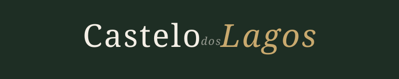
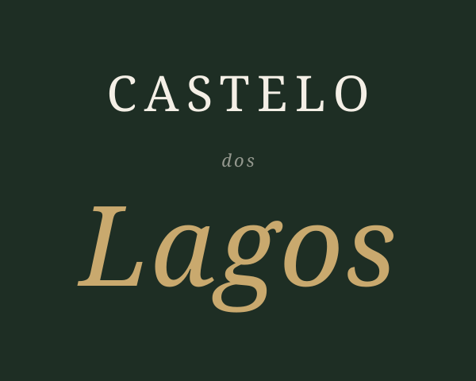
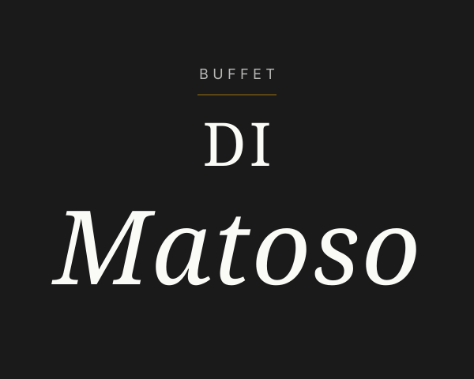
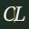

Cormorant Garamond como backbone compartilhado. Italic como signature. Hairlines editoriais no lugar de ornamentos. A unidade vem da tipografia — a distinção vem da cor.
Primary — Horizontal
Two brands · one type system

Castelo dos Lagos · Forest + Gold
Buffet Di Matoso · Charcoal + Deep Gold
Stacked — hero / mobile / editorial
Same proportions, different voice


Monogram & Favicon — escala real
16 · 32 · 64 · 128 px
Castelo dos Lagos
128
64
32

128
64
32
16
Buffet Di Matoso
128
64
32
128
64
32
16
"A mesma mão que desenhou a letra escolheu também o silêncio ao redor dela."